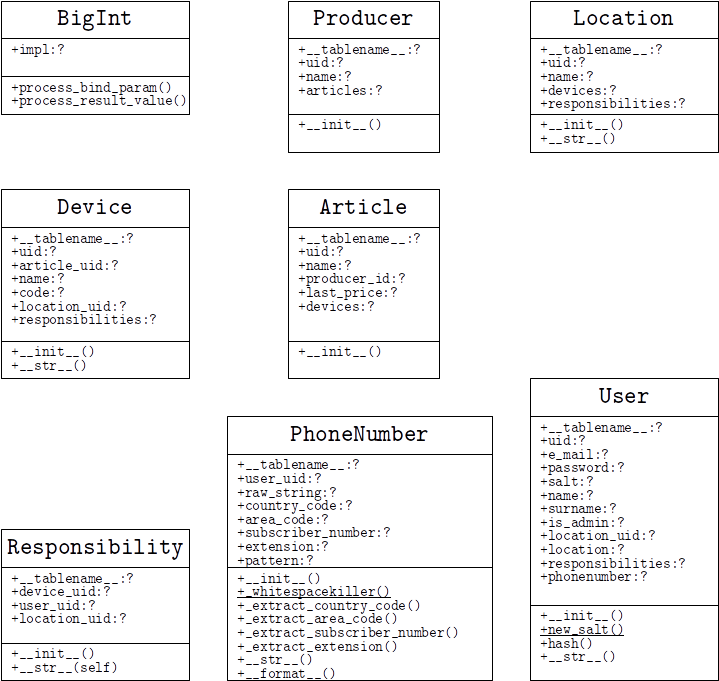

Auf Basis dieses ERM wurden Klassen wie folgt erstellt:

Diese Klassen erben alle von einer abstrakten Basisklasse Base, die von SQLAlchemy bereitgestellt wird, und besitzen jeweils einen eigenen Datenbank-Table. Auch die Beziehungen der Klassen werden auf Basis des Quellcodes automatisch von SQLAlchemy erzeugt.
Da SQLAlchemy im Hintergrund eine tatsächliche SQL-Datenbank einsetzt, ist es natürlich an deren Datentypen gebunden. Daher ist es hier, ähnlich einer traditionellen DBAPI, nötig, Adapter zu schreiben, um eigene Datentypen ablegen zu können. Konkret geht es darum, das salt eines Nutzers in der Datenbank zu speichern. Das Salt ist eine sehr große Zahl. Daher wird ein eigener Datentyp benötigt, welcher den Python-seitigen Wert beim Speichern in die Datenbank zu einem String konvertiert und beim Abrufen die umgekehrte Umwandlung durchführt. SQLAlchemy stellt hierzu die abstrakte Klasse TypeDecorator zur Verfügung, von dieser leiten wir eine Klasse BigInt ab. Als Klassenvariable legen wir über impl fest, dass die datenbankseitige Implementierung als string erfolgt, die beiden Methoden process_bind_param und process_result_value nehmen die Umwandlung vor. Es ist auch möglich, je nach dialect der Datenbank, verschieden umzuwandeln, dies ist hier allerdings nicht nötig.
In SQLAlchemy werden Beziehungen zwischen Tables mittels der relationship Methode hergestellt. Die Variante, für die wir uns entschieden haben, nutzt hierbei backref:
Es wird also in einer Klasse lediglich ein Fremdschlüssel festgelegt. In der anderen Klasse wird das relationship gesetzt. Dieses relationship stellt hierbei bei jeder Instanz von Parent eine Liste aller Children-Instanzen zur Verfügung. Umgekehrt legt backref bei Children den Member parent an, welcher auf die zugehörige Parent-Instanz verweist. Hier gilt zu beachten, dass es egal ist, auf welcher Seite der Beziehung der Fremdschlüssel hinterlegt ist.
Außerdem ist das erste Argument von relationship nicht die Klasse Child, sondern ein String, der ihren Namen enthält. Dies ermöglicht es, Beziehungen anzulegen, ohne dass, die Partnerklasse bereits angelegt wurde bzw. bekannt ist, was das Arbeiten wesentlich komfortabler macht.
Es lassen sich mit SQLAlchemy jedoch nicht nur 1-zu-n-Beziehungen anlegen. Durch Erweiterung der relationship Methode mit dem uselist Parameter lässt sich auf folgende Weise an beiden Seiten des relationships eine Einzelinstanz hinterlegen.
Prinzipiell ist es auch möglich, n-zu-n Beziehungen-herzustellen, dies ist bei uns jedoch nicht nötig und wird daher nicht aufgeführt.
Beim Arbeiten mit SQLAlchemy gibt es ein sehr prominentes Konstrukt: Sessions
Über diese erfolgt die komplette Interaktion mit der Datenbank, sie erledigt im Hintergrund jedoch auch Dinge wie “State-Management” (Konsistenzstatus zwischen Objekt und Datenbank), was später noch eine wichtige Rolle spielt. Eine Session wird zunächst an eine Engine (dt. Datenbanktreiber) angebunden; diese Engine verwaltet z.B. den bereits erwähnten Dialect und stellt das Interface zur DBAPI und damit auch zur Datenbank dar. Über ihre Lebenszeit kann man einer Session Objekte manuell oder über Abfragen hinzufügen, sie entfernen und Änderungen an der Datenbank vornehmen. Oftmals, so auch in unserem Fall, gibt es jedoch viele Stellen, von denen aus auf eine Session zugegriffen werden muss. Da stellt man sich natürlich die Frage, wann man denn eine neue Session aufmacht und schließt etc.. Hierzu steht in der Dokumentation von SQLAlchemy:
“When do I construct a Session, when do I commit it, and when do I close it? [...] Make sure you have a clear notion of where transactions begin and end, and keep transactions short, meaning, they end at the series of a sequence of operations, instead of being held open indefinitely.”[#SessionBasics, 22.12.18 - 16:41 Uhr]
Dies und der Fakt, dass eine Session stets ordnungsgemäß initialisiert und deinitialisiert werden muss, führt uns daher ein weiteres Mal zu einem Kontext-Manager. Dieser Kontext-Manager verfügt über die Engine, zu der alle Sessions verbunden werden, sowie einen sog. sessionmaker. Dieser Sessionmaker kümmert sich um die Konfiguration der erzeugten Sessions. Da es jedoch potentiell wünschenswert ist, mehrere Datenbanken zu haben (z.B. lokale Datenbank für Geräte und remote Datenbank für Nutzerdaten), wird im Hinblick auf Zukunftssicherheit und Maintainability, eine Variante gewählt, die es erlaubt, mehrere Kontext-Manager für Sessions auf verschiedenen Engines zu haben. Damit steht eine Fabrikmethode (setup_context_session) zur Verfügung, der eine Engine übergeben wird und die den Kontext-Manager als Klasse zurückgibt. Die zurückgegebene Klasse kümmert sich dann um eventuelle Rollbacks im Fehlerfall etc.. Es ist wichtig zu beachten, dass Methoden, die im Hintergrund zu INSERT, DELETE oder UPDATE evaluiert werden, erst beim Aufrufen der Methoden flush oder commit der Session tatsächlich geschrieben werden, sofern kein autocommit eingestellt ist.
Der Aufbau der Fabrikmethode ist in soweit non-trivial, dass in ihr eine Klasse definiert wird in der widerrum weitere Klassen definiert werden, welche mitunter voneinander erben. Dieses vielleicht überkompliziert anmutende Konstrukt, ist eigentlich nicht nötig, stellt aber eine sehr elegante Lösung dar und ist tatsächlich sehr einfach erklärt. Die erste innere Klasse wurde bereits erläutert und ist die, welche von der Funktion schließlich zurückgegeben wird. In dieser wird über den sessionmaker von SQLAlchemy eine Klasse _Session erzeugt - auf Instanzen dieser können bereits Datenbankoperationen durchgeführt werden, i.d.R. wird das bei SQLAlchemy auch so gemacht. Wir hingegen erben nun von dieser Klasse. Im Konstruktor der abgeleiteten Klasse delegieren wir die tatsächliche Initialisierung zum Konstruktor der Grundklasse und hinterlegen eine leere Liste, welche uns später als Cache dient. Desweiteren redefinieren wir die Methode add der GrundklasseTatsächlich werden dem gleichen Prinzip folgend, weitere Methoden redefiniert, in ihr wird nun jede übergebene Instanz zum vorher angelegten Cache hinzugefügt und anschließend der Funktionsaufruf wieder an die Basisklasse delegiert. Dieses Cache ermöglicht es der Session sobald ihr Kontext verlassen wird, alle hinzugefügten Instanzen zu „refreshen“Dieser refresh wird mittels map durchgeführt. Eigentlich ist map eine Funktion, um eine Funktion auf alle Elemente eines iterierbaren Objektes anzuwenden und aus den Ergebnissen eine Liste zu erstellen. Hier wird die Ergebnisliste jedoch verworfen, map wird lediglich für die Seiteneffekte genutzt. . Hierbei wird die Instanz mit der Datenbank synchronisiert - die meisten Objekte erhalten hier ihre UID von der Datenbank. Später wurde die innerste Klassendefinition dahingegend geändert, dass der sessionmaker entfällt. Stattdessen wird von der Session Grundklasse geerbt und die Konfiguration selbst durchgeführt.
Nachdem die Vorarbeit mit Sessions und Klassen geleistet ist, ist es nun sehr einfach, neue Einträge in der Datenbank vorzunehmen. Das folgende Beispielprogramm zeigt, wie einige bereits erzeugte Objekte in der Datenbank abgelegt werden.
Wie zu sehen ist, können sehr komfortabel entweder einzelne Objekte oder eine ganze Reihe von ihnen auf einmal geschrieben werden. Commits, Rollbacks etc. werden automatisch im Hintergrund gehandled.
Abfragen können auf zwei verschiedenen Wegen erfolgen: